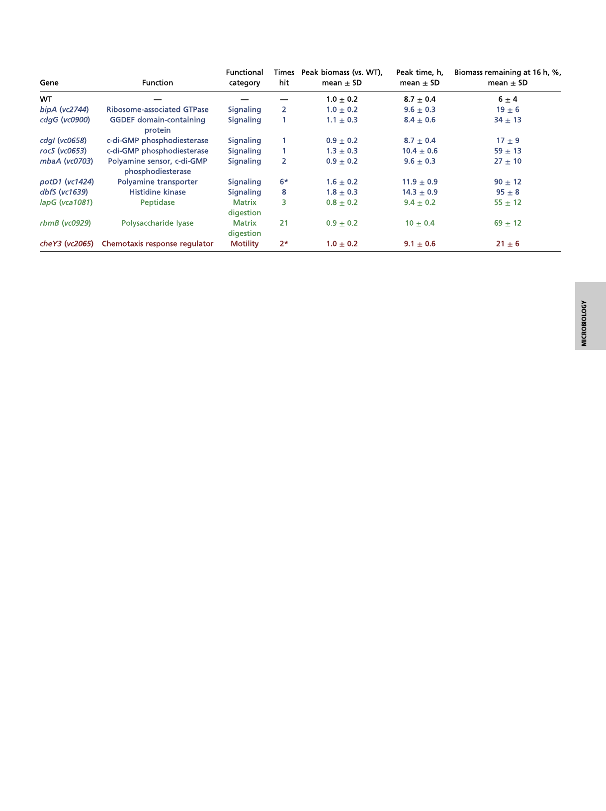

Table 1. Genes identified as required for V. cholerae biofilm dispersal and phenotypes of deletion mutants
*Value includes transposon insertions in other genes in this operon.
of select mutants from each category to define the functions of
the components; other mutants will be characterized in separate
reports.
A Two-Component Regulatory System Controls V. cholerae Biofilm
Dispersal. The mutant from our screen that exhibited the most
extreme dispersal phenotype had a transposon in a gene
encoding an uncharacterized putative histidine kinase (desig-
nated HK), Vc1639 (Table 1). A screen for factors required for
V. cholerae colonization of the suckling mouse intestine repeat-
edly identified Vc1639, suggesting that this HK is core to the
cholera disease (20). HKs typically contain periplasmic ligand-
binding domains and internal catalytic domains that switch be-
tween kinase and phosphatase activities based on ligand detection
(21). HKs transmit sensory information to cognate response reg-
ulators (RRs) by altering RR phosphorylation (22), and RRs in
turn control gene expression and/or behavior depending on
their phosphorylation states. Deletion of vc1639 in V. cholerae
resulted in an 80% increase in peak biofilm biomass relative to
WT, and nearly all of the biofilm biomass remained at 16 h,
demonstrating that Vc1639 is essential for biofilm dispersal
(Fig. 2A and Table 1).
Complementation of the Δvc1639 mutant with vc1639 inserted
onto the chromosome at an ectopic locus restored WT biofilm
dispersal phenotype of the Δvc1639 mutant, vpsL-lux expression
was elevated 10-fold throughout the growth curve in the Δvc1639
strain compared with WT V. cholerae (Fig. 2B). vpsL is the first
gene in the major extracellular matrix biosynthetic operon,
showing that Vc1639 signaling regulates matrix production. We
note that while expression was higher in the Δvc1639 mutant
than in the WT strain, expression decreased in both strains with
increasing cell density (Fig. 2B). Quorum sensing is known to
repress genes encoding matrix production components (23),
likely underlying this effect. Fusions of lux promoter to the genes
encoding the biofilm master regulators vpsR and vpsT also
exhibited increased light production in the Δvc1639 mutant,
suggesting that Vc1639 acts at the top of the cascade to control
vc1639 is the final gene in a three-gene operon that includes
genes encoding a hypothetical protein of unknown function
(Vc1637) and an OmpR family RR (Vc1638) (Fig. 2C). We
denote Vc1639 as DbfS, for dispersal of biofilm sensor, and
Vc1638 as DbfR, for dispersal of biofilm regulator. Domain
prediction suggests that DbfS contains two transmembrane (TM)
domains, a periplasmic sensory domain, and a cytoplasmic
HAMP domain that likely transmits ligand-binding–induced
conformational changes to regulation of C-terminal kinase/
phosphatase activity (Fig. 2C). The first gene in the operon,
vc1637, appears to encode a small secreted protein containing a
PepSY domain, a domain that inhibits extracellular proteases in
other proteins (24). We did not examine the function of Vc1637
in this study.
To explore the connection between DbfS and DbfR in the
control of biofilm dispersal, we deleted dbfR. Commonly, cog-
nate HK and RR null mutants have identical phenotypes. To our
surprise, the ΔdbfR mutant had no biofilm dispersal defect and
progressed through the biofilm lifecycle identically to WT
(Fig. 2D). We considered the possibility that some other RR is
the partner to DbfS. To test this idea, we constructed the ΔdbfS
ΔdbfR double mutant and found that this strain behaved iden-
tically to the ΔdbfR strain (Fig. 2D), demonstrating that dbfR is
epistatic to dbfS, and thus DbfR indeed functions downstream of
DbfS. Moreover, because RRs are typically active when phos-
phorylated, our results suggest that DbfR must be active in the
absence of DbfS. Thus, we reason that phospho-DbfR is the
species present in the ΔdbfS strain.
To verify the hypothesis that phospho-DbfR is responsible for
the dispersal defect in the ΔdbfS strain, we constructed a non-
phosphorylatable allele of DbfR (D51V). The V. cholerae
dbfRD51V mutant displayed the WT biofilm dispersal phenotype
in the presence and the absence of DbfS (Fig. 2E). DbfR-SNAP
fusions showed that SNAP did not interfere with WT DbfR
function, and that DbfR protein abundance was unchanged in
E). Thus, phospho-DbfR causes V. cholerae cells to remain in the
biofilm state in the ΔdbfS mutant.
It follows that deletion of dbfS causes biofilm dispersal failure
due to loss of DbfS phosphatase activity on DbfR. To test this
hypothesis, we assessed in vivo DbfR phosphorylation in the
presence and absence of DbfS. Phos-tag gel analysis enabled
separation and visualization of phosphorylated and dephos-
phorylated DbfR. In the absence of DbfS, DbfR was phos-
phorylated, and induction of DbfS production caused the
phospho-DbfR species to disappear (Fig. 2F). Thus, under our
experimental conditions, DbfS functions as a DbfR phosphatase.
We infer that some other unknown kinase must exist and it
phosphorylates DbfR (Fig. 2G). We propose that phospho-DbfR
is active and drives the expression of matrix biosynthetic genes,
and that increased matrix production prevents biofilm dispersal.
Bridges et al.
PNAS | December 22, 2020 | vol. 117 | no. 51 | 32641